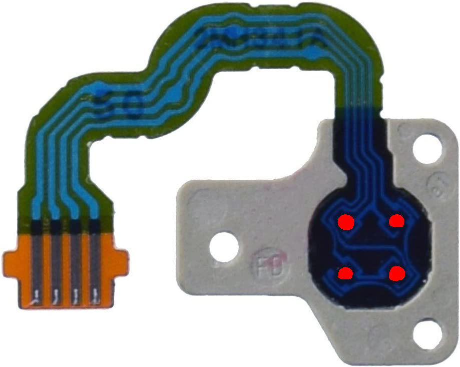
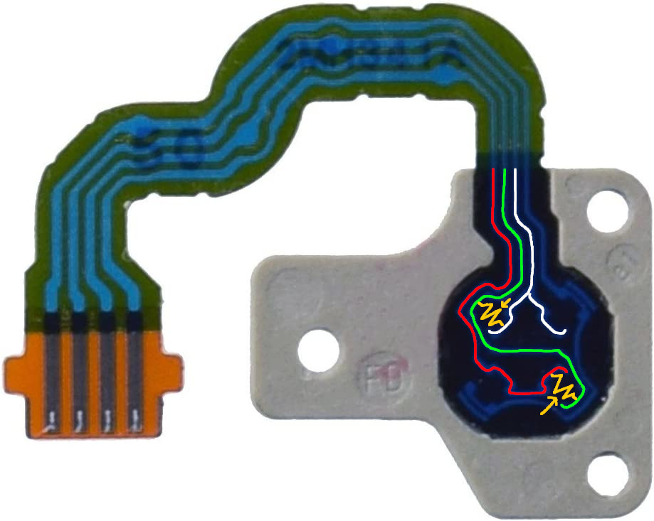
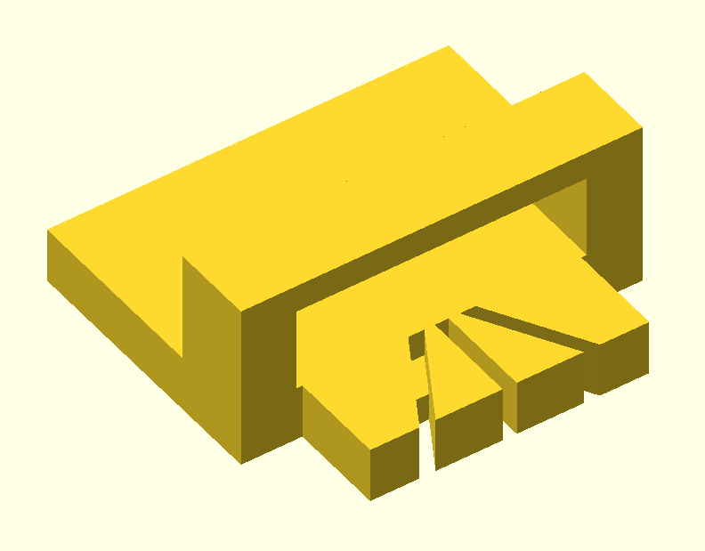
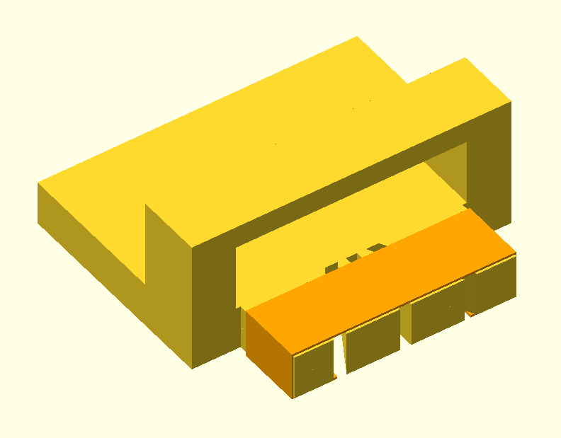
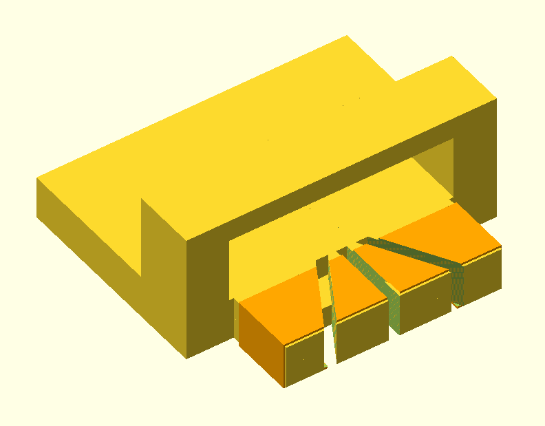
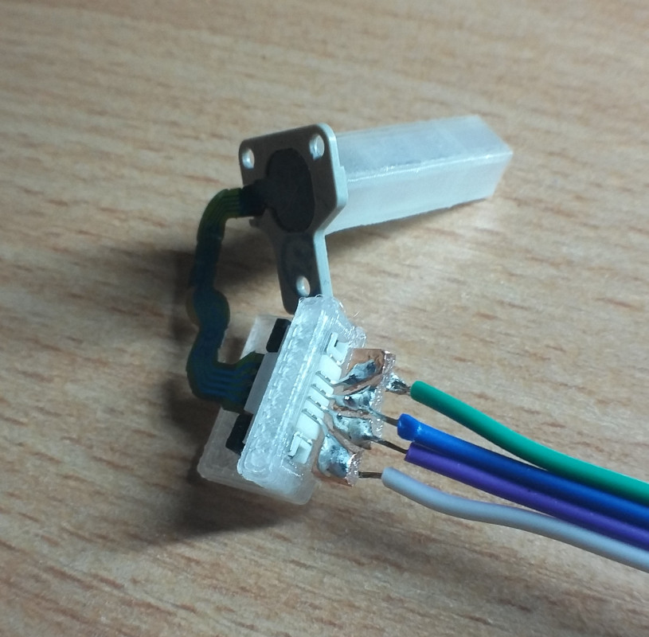

This is fairly simple but there's not much information available on it, so I made this little guide.
This is the C-stick module:
The C-stick module has 4 pressure sensistive variable resistors:
These are the two circuits (one for each axis) we'll use with the C-stick module:
In order to connect wires to the C-stick module you'll need a 4-pin FFC (FPC) ZIF connector with 1mm pitch. These are usually surface mount, so a PCB is preferred. However if you don't want to use a PCB, this is what I did:
3D print this:
Put copper tape around here:
Cut the tape at the grooves:
Bend the connector pins into a fan so they line up with the 4 areas of on the copper tape. Now you have some larger pads you can solder both the pins and wires to.
Final result:
Signal strength is weak with the stock nub and a 10bit ADC. A 20mm 3D-printed nub helps. Using a 12bit ADC for a 4x increase in resolution should be a good boost.
3DS C-stick modules are available on AliExpress/Alibaba. Single unit is around 15 USD. When buying in bulk (20+ units) the price goes down to around 5 USD.
The ZIF connectors can be found in many electonics stores (eg/ Mouser) or eBay. These typically cost under 1 USD each but you may have to buy a multiple.